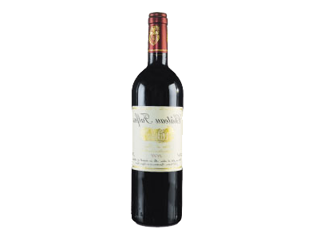
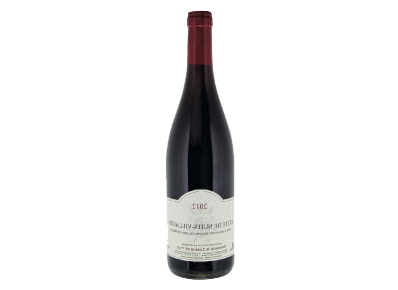

Malicieux
Le moins cher de notre sélection, ce vin démontre qu’il est possible de faire du bel ouvrage à ce niveau de prix. Jouant sur le cépage avec malice mais sans excès, il offre une belle vivacité et du fruité. Chez Lavinia
16,6
13,20 €
13,20 €
Muscadet-sèvre-et-maine sur lie 2013 (fût de chêne)
Manoir de la Grelière

Salin
D’une belle minéralité aux notes salines, la bouche est citronnée avec des pointes de fruits exotiques et beaucoup de fraîcheur. A savourer avec une assiette d’huîtres. Take a look
16,6
13,20 €
13,20 €
Muscadet-sèvre-et-maine sur lie 2013 (fût de chêne)
Manoir de la Grelière

Music
Jacob Cummings Take a look
Settings
Jacob Cummings Take a look
Camera
Jacob Cummings Take a look